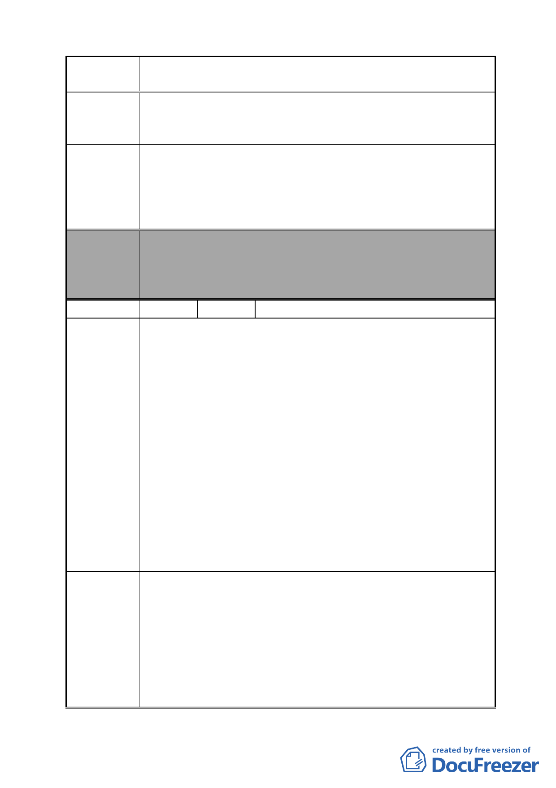

案 名 變更臺北市南港區鐵路地下化沿線土地主要計畫案
建議辦法
委員會
決議
編號
陳情理由
建議辦法
心不如預期的理想，除了浪費公幣之外，那麼政府對這些無
法與公權力對抗的無辜受害者將情何以堪、將如何補償？又
來得及嗎？
建議政府應作出更負責更謹慎的評估與作為。可先設立小型
的流行音樂中心，就像小型軟體園區一樣，了解台灣音樂創
作的市場規模及產業需求後，再做階段性的調整，這樣才能
將保障人民權益與產業未來發展同時兼顧，也更能符合人民
對新政府施政更大的認同與信服。
本案除文字誤繕應再作修正外，其餘依市府本次會議所送修
正計畫書內容通過。
（依市府本次會議所送修正計畫書，業將陳情地點剔除於市
地重劃範圍）
56 陳情人 新矽谷科學園區 各大樓管理委員會
本新矽谷科學園區 A、B、C 棟及全世好大樓地號分別為:
A 棟：北市南港區玉成段三小段 485 號。
B 棟：北市南港區玉成段三小段 512 號。
C 棟：北市南港區玉成段三小段 527 號。
全世好：北市南港區玉成段三小段 502、503 號。
因市府於 97 年 11 月 6 日假南港行政中心 10 樓大禮堂，
辦理「變更南港區鐵路地下化沿線土地主要計畫案」進行說明
會，本棟大樓新矽谷 A、B、C 棟及全世好管理委員會各業主
派員協同到場参加，本新矽谷科學園區就在新啟
用松山
火車站旁，經鐵路地下化後，各業主及各棟歷任主委長年努
力，希望配合都市更新與重劃…等，皆不得其門而入，懇請 市
府將本區納入「計畫案」中一併討論。
各棟臨新啟用松山火車站，且鐵路已地下化，新矽谷科學
園區比鄰車站場區 400 公尺內，為了整個都市市容及整街廓景
觀，如未能與該「計畫案」一併納入配合規劃，實有些可惜。
1.申請新矽谷科學園區 A、B、C 棟及全世好大樓，納入台北
市政府「變更台北市南港區鐵路地下化沿線土地主要計畫」
案。
2.各棟大樓業主皆有意重整建，望藉由此次「計畫案」將本區
納入規劃中，變更為商業區。
3.是否可依照內政部營建署「都市更新條例」給予更新地區之
規劃或依直轄市、縣（市）主管機關優先劃定為更新地區相
關條例辦理。
- 60 -